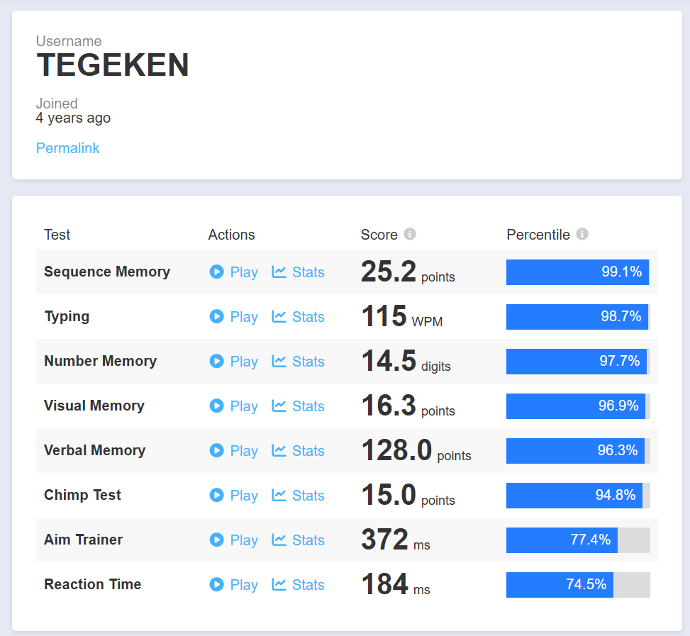
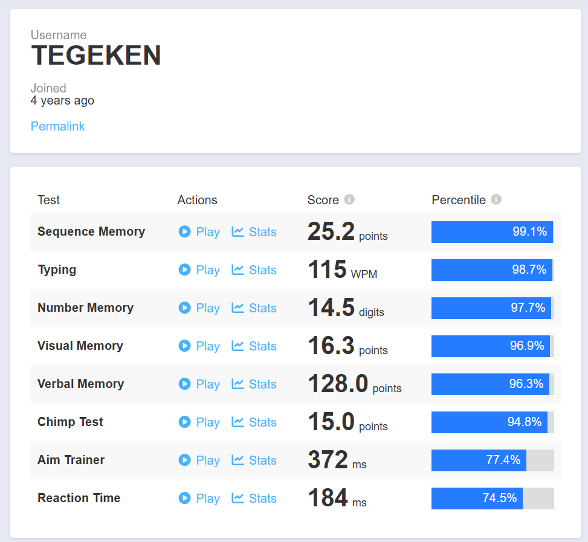

I like playing chess, when playing online I prefer faster time controls (like bullet, where i'm top 2.5% on chess.com as seen above), but I prefer longer, more thought out games over the board.

I like playing video games, some of my favorite games of all time are Minecraft, Hollow Knight, and Undertale. I used to play Minecraft very actively back in highschool, and I met many friends from all over the world thanks to it, some of which I've managed to meet in person.
I like scuba diving, I'm certified as an Advanced Open Water Diver, meaning I can dive up to 30 meters deep. I really enjoy being deep underwater, watching the sparkles of light barely reach me from above after dissipating in the water, it is a very uniquely calming and beautiful experience.
 

I like playing cognitive games like lumosity and the human benchmark.
I like practicing fast typing on websites like typeracer and monkeytype, I can type consistently above 110 WPM with an accuracy of 98% or higher.
I like making spreadsheets to keep track of random bits of personal data, I realise that sounds very lame but I find it quite satisfying to organize information in a neat way. The image above was my compression spreadsheet where i tracked the file sizes of my phone camera roll archives after using the compression algorithms JpegXL and AV1
I like reading political and economic theory, and engaging in discussions about them